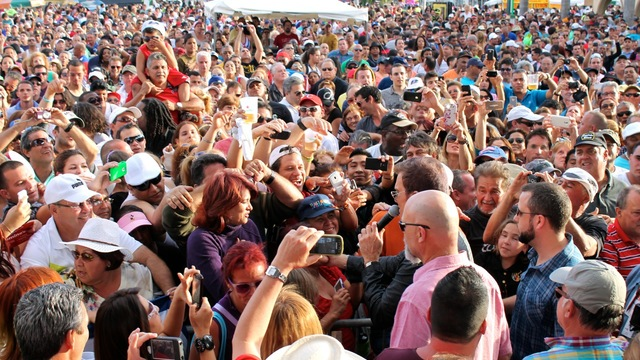

Big Day Out

The Big Day out (referred to as BDO) is a summer music festival that takes place across Australia on the Gold Coast, Sydney, Adelaide, Melbourne and Perth. The festival began in 1994 with the dream lineup of Nirvana, The Violet Femmes and You Am I. Since then the lineup has included acts from rock, electronic and dance music including local legends Powderfinger and international heavyweights Mettalica, Muse, Kanye West and the Red Hot Chili Peppers. Tickets typically go on sale in stages, and over 201,000 attended last year, and with Pearl Jam, Arcade Fire and Blur headlining the 2014 events, sales are sure to be in the hundreds of thousands once again.
Melbourne International Comedy Festival
With an attendance figure of over 638,000 the Melbourne International Comedy Festival can lay claim to being the largest cultural event in Australia. The festival has grown each year, and is not confined to indoor concert performances. 148,000 of the guests at last years event experienced the festival in outdoor locations. The comedy festival attracts the best comics and performers in the world and is the third largest of its kind in the world, with many using the months prior or following to have their own Australia-wide solo tours. The event typically runs from late March to late April each year.
Adelaide Fringe Festival
The Adelaide Fringe is modeled on its larger cousin; the Edinburgh Fringe Festival, and is an yearly celebration of arts across the city of Adelaide. The important feature of the festival is that any artist with a show, event or exhibition is able to register, which means that the performances are the most diverse of any festival in Australia. Comedy features alongside cabaret, puppetry and visual art compete for attention and theatre and circus co-exist for a four week long period during February and March, contributing to an amazing carnival atmosphere that transforms the city.
Bathurst 1000 V8 Supercar Race
If Formula 1 has pole position in the hearts of motor racing fans in other parts of the world, then the V8’s are the undisputed kings of motor racing in Australia. The Bathurst race is a 1000 kilometer event that is one of the highlights of the V8 Supercar Championship Series, with four days of qualifying and racing taking place in rural New South Wales on the iconic (and aptly named) Mount Panorama. The race has a long history, to the extent where each bend on the winding alpine course has a colloquial name (Hells Corner, The Cutting, and Skyline are some of the best) which each has a story attached. The feature race takes place on a Sunday, with the most passionate race fans camping out at the mountain a week prior to the event.
Splendour in the Grass Festival
Splendour is one of the best regarded music festivals in Australia, consistently attracting the most diverse range of acts to satisfy lovers of every music genre and transporting them to the usually quaint and quiet seaside town of Byron Bay for a three day celebration. Named after the work of William Wordsworth, the clue is that this is not your typical festival, with the ‘hipster’ scene well represented every year, and the majority of the guests camping on fields alongside the show grounds where the acts perform, giving it a Glastonbury-like feel. The most recent event featured international acts including Mumford and Sons, Of Monsters and Men and Passion Pit, while Kanye West, Coldplay, Bloc Party, The Smashing Pumpkins and Florence and the Machine have all graced the fields of Byron Bay in recent years. The event takes place in mid-winter each year, with tickets always sold out well in advance.
Byron Bay Bluesfest
Splendour is not the only festival that the small town of Byron Bay, with the Byron Bay Bluesfest (Also known as simply Bluesfest) also a fixture on the annual calendar. The five stages caters to the same crowd as the international Monteux festival, and runs between 4 and 5 days every Easter. Blues and roots artists feature prominently on the bill, and paired with the usually mild weather that is common to the Easter period in the North Coast region of New South Wales, the atmosphere is a relaxed and communal one, headlined by acts such as Bob Dylan, Ben Harper, Earth Wind & Fire and Santana.
Sydney Mardi Gras
The Sydney Mardi Gras festival is a compilation of events held over several days that has been held primarily in the Bondi Beach region for the last 34 years. It is a annual event that is a celebration of LGBT pride and attracts visitors from around the world as one of the largest events of its kind. Evolving from gay rights marches in the 70’s, as part of a civil rights movement, the festival is now much more celebratory and carnival-like in its tone, culminating in the iconic Mardi Gras Parade. The event takes place in March each year, and has recently been a platform for calls for marriage equality in Australia.
Falls Festival

The Falls Festival is a music and arts festival that coincides each year with new years celebrations with the event spanning 3-4 days, always culminating with a gala concert on new year eve to ring in the new year. Taking place in the rural Victorian town of Lorne, there are music acts, as well as dance, circus and comedy with a focus on a smaller more intimate experience for concert attendees. In the last decade the popularity of holding a festival over new years has led to satellite events being held in Marion Bay, Tasmania and Byron Bay, New South Wales which each seek to replicate the unique Falls experience.
Melbourne International Jazz Festival

For those after a music festival that takes place in a major city, there is no better example in Australia that the Melbourne International Jazz Festival. The passion and intensity of Australia’s jazz scene is in full force here, with many earmarking the event as the highlight of the contemporary music calendar, with the gala concert that opens the event featuring the majority of the international roster of acts who congregate to perform in one mind-blowing performance. The music goes hand in hand with Melbourne’s internationally renowned food and wine scene, and runs each year for a week between May and June.
The Melbourne Cup Carnival

The Melbourne Cup Carnival is four days of world class horse racing that takes place over a week in November. It’s feature event is ‘the race that stops a nation’ The Melbourne Cup, which boasts $6 million in prize money and attracts the best trainers and thoroughbreds from Europe, The Middle East and Japan in the quest to win the feature race. The Flemington Racecourse plays hosts to over 350,000 patrons over Derby Day, Cup Day, Oaks Day and Stakes Day, with record attendance topping 415,000 in 2006. The carnival is also home to hotly contested fashion events and is the largest source of betting income for a single day with $60 million wagered on Cup Day alone. Cup Day always takes place on the First Tuesday in November, with the carnival week and season taking place around the showpiece event.